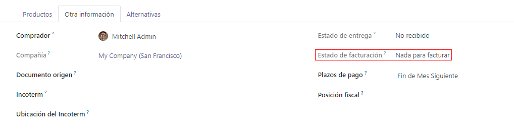

Políticas de control de facturación¶
En Odoo, las políticas de control de facuración determinan las cantidades que los proveedores facturaron en cada orden de compra, para cantidades ordenadas o recibidas. La política seleccionada en los ajustes será el valor predeterminado y se aplicará a todos los nuevos productos que cree.
Configuración¶
Para ver la política de control de facturación predeterminada, vaya a y baje hasta la sección de Facturación. Aquí hay dos opciones para las políticas de Control de facturación: Cantidades ordenadas y Cantidades recibidas.
La política seleccionada será la que se usará de manera predeterminada para cualquier nuevo producto que cree. La definición de cada política es la siguiente:
Cantidades ordenadas: crea una factura de proveedor en cuanto se confirma una orden de compra. Los productos y cantidades en la orden de compra se usan para generar un borrador de factura.
Cantidades recibidas: se crea una factura solamente después de recibir una parte de la orden. Los productos y cantidades recibidas se usan para generar un borrador de factura. Un mensaje de error aparecerá si intenta crear una factura de vendedor sin haber recibido nada.
Nota
Si uno o dos productos necesitan una política de control diferente, los ajustes predeterminados del control de facturación se pueden cambiar si va a la pestaña Compra en la plantilla del producto y modifica el campo de Política de control.
Flujo de ejemplo: cantidades ordenadas¶
Para completar un flujo de trabajo de ejemplo usando la política de control de facturación de cantidades ordenadas, primero vaya a , baje hasta la sección de Facturación y seleccione Cantidades ordenadas. Luego, Guarde los cambios.
En la aplicación Compras, cree una nueva solicitud de cotización. Llene la información en el formulario de la cotización, agregue productos a las líneas de facturación y haga clic en Confirmar Orden. Luego, haga clic en Crear Factura. Puesto que la política está establecida en cantidades ordenadas, el borrador de la factura se puede confirmar tan pronto como se crea, sin tener que recibir ningún producto.
Flujo de ejemplo: cantidades recibidas¶
Para completar un flujo de trabajo de ejemplo usando la política de control de facturación de cantidades recibidas, primero vaya a , baje hasta la sección de Facturación y seleccione Cantidades recibidas. Luego, Guarde los cambios.
Cree una nueva solicitud de cotización en la aplicación Compra, complete la información del formulario de cotización, agregue productos a las líneas de la factura y haga clic en Confirmar orden. Haga clic en el botón inteligente de Recepción. Establezca la cantidad en la columna Hecho para que coincidan con las de la columna Demanda y valide los cambios. Después, en la orden de compra, haga clic en Crear factura y a continuación en Confirmar. Como la política esta establecida en cantidades recibidas, podrá confirmar el borrador de la factura solo cuando reciba al menos una parte de las cantidades que ordenó.
Conciliación de tres vías¶
Activar la conciliación de tres vías asegura que las facturas solo se paguen una vez que reciba una parte de (o todos) los productos incluidos en la orden de compra. Para activarla, vaya a , diríjase a la sección Facturación y luego haga clic en Conciliación de tres vías: compras, recepciones y facturas.
Nota
La función de conciliación de tres vías solo tiene el propósito de funcionar con la política de control de facturas correspondiente a Cantidades recibidas.
Pagar las facturas de proveedor con la conciliación de tres vías¶
Cuando la conciliación de tres vías está activada, las facturas de proveedor mostrarán el campo Se debe pagar en la pestaña Otra información. El campo estará configurado como Sí al crear una nueva factura de proveedor, ya que no es posible crear una factura hasta que reciba al menos una parte de los productos incluidos en la orden de compra.

Nota
Si no ha recibio la cantidad total de productos de una orden de compra, Odoo solo incluirá los productos que sí recibió en el borrador de la factura de proveedor.
Puede editar los borradores de factura para incrementar la cantidad facturada, cambiar el precio de los productos en la factura y agregar productos. Si lo hace, el estado del campo Debe pagarse debe estar en Excepción. Esto significa que Odoo nota la discrepancia, pero no bloquea los cambios ni muestra un mensaje de error puesto que puede haber una razón válida para hacer cambios en el borrador de la factura.
Una vez que registró el pago para una factura de proveedor y aparezca el panel verde que indique Pagado, el estado del campo Debe pagarse cambiará a No.
Truco
Odoo establece automáticamente el estado Debe pagarse que aparece en las facturas. Sin embargo, puede cambiarlo manualmente al hacer clic en el menú desplegable del campo dentro de la pestaña Más información.
Ver el estado de facturación de una orden¶
Cuando se confirma una orden de compra, el Estado de facturación puede verse en la pestaña Otra información en el formulario de la orden de compra.
A continuación verá una lista de los diferentes estados que puede tener un Estado de facturación cuando se muestra, dependiendo de la política de control de facturación que utilice.
Estado de facturación |
Condiciones |
|
Sobre cantidades recibidas |
Sobre cantidades pedidas |
|
Nada que facturar |
Orden de compra confirmada. No ha recibido los productos. |
No aplica |
Esperando facturas |
Todos o algunos productos recibidos. Factura sin crear. |
Orden de compra confirmada |
Facturado |
Todos o algunos productos recibidos. El borrador de factura ha sido creado. |
Borrador de factura creado |